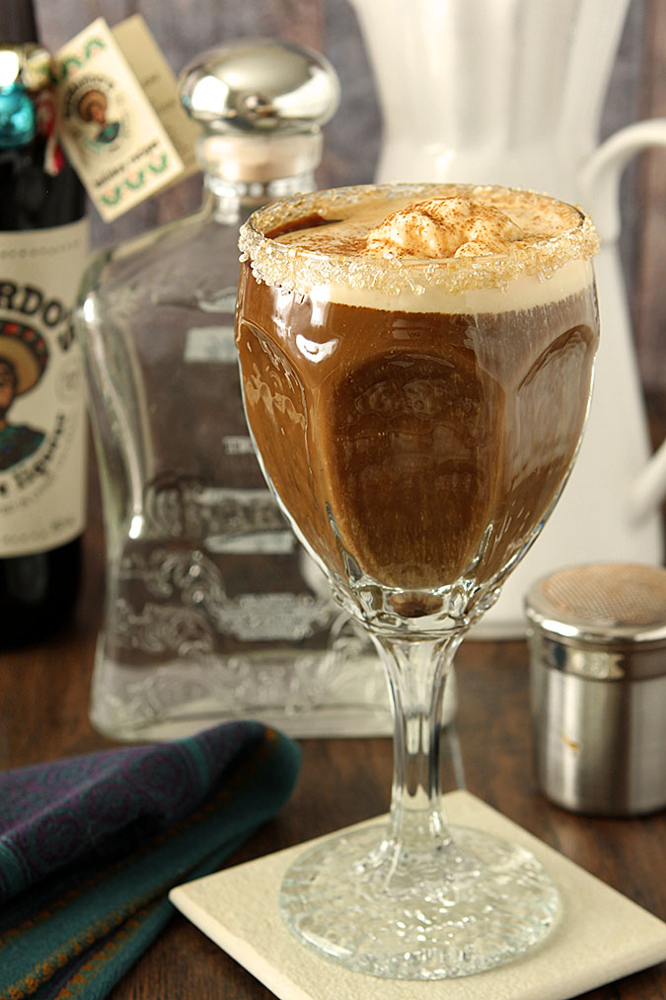

In Mexico, coffee is often brewed with cinnamon and sugar, incorporated right into the brewing technique. The result is a coffee that's at the same time sweet and spicy. The Mexican coffee cocktail has a similar vibe.
What You'll Need
- ½ oz Kahlua
- ½ oz tequila
- 6 oz hot coffee
- Sugar to taste
- Whipped cream
- cinnamon
- chili flakes to taste
- Maraschino cherry
Fill your glass about ¾ with hot coffee. Add the tequila, Kahlua, and sweeten to taste.
Slowly pour the cream so that it rests on top, then top with cinnamon and a Maraschino cherry. Add chili to give it an extra kick.
Try it floated with vanilla ice cream for the real down South taste!